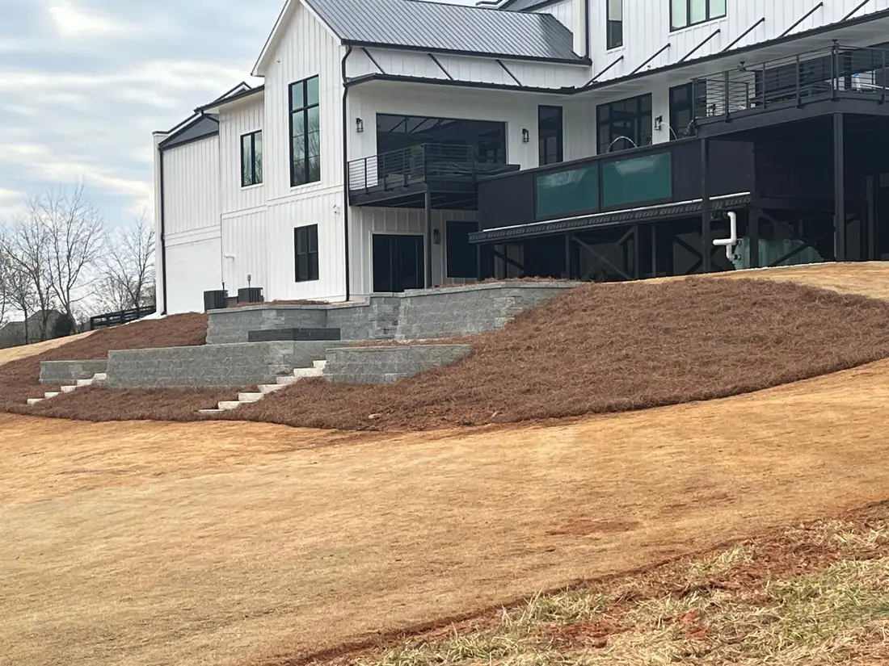
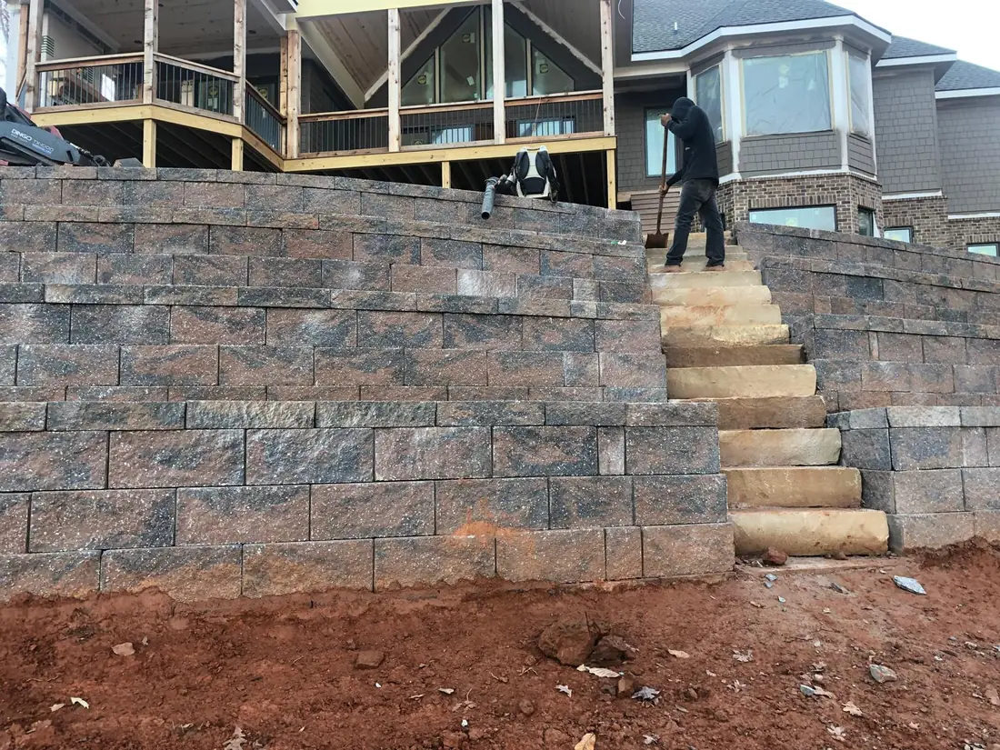
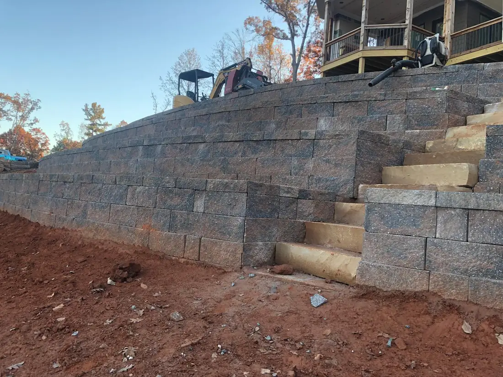

On sloped ground a retaining wall does two jobs at once: it holds the earth in place and it hands you back flat, usable yard. Georgia's hard rains wash soil straight off a bare slope, and around Cumming and Dawsonville that runoff also drives water toward the house — a good wall steers it away from the foundation.
Done right, a wall turns a steep bank into a level patio, a garden, or a play area, and steps a sharp grade down in terraces you can actually use. It's one of the few improvements that adds real value and looks better every season it stands.
But here's the thing about retaining walls: the difference between one that lasts and one that fails is almost entirely underground.
Turn a slope you can't use into yard you can.
A bank that's too steep to mow, plant, or walk on is wasted space. Terrace it and that same hillside becomes a flat patio, a raised garden bed, or a level spot for the kids — and the erosion that used to wash your mulch downhill stops.
Multi-tier walls step a sharp grade down gradually, which both looks better and holds better than one tall wall fighting the whole slope at once.
- Level, usable space out of a slope
- Erosion and runoff under control
- Water steered away from the foundation
- Terraced, multi-level builds


What keeps a wall standing is what you don't see.
Anyone can stack block. What separates a wall that lasts from one that bulges and leans in a few years is underneath and behind it: a compacted base, drainage stone behind the wall, and geotextile fabric to keep soil out of the drainage.
Skip the drainage and water builds up behind the wall with nowhere to go. That pressure is exactly what pushes walls over. Georgia's clay holds water instead of letting it drain, which makes doing it right even more important here — not less.
Why cheap walls bulge and lean
No drainage stone, no fabric, no compacted base. The wall looks fine the day it's built, then the first few wet seasons push it out of line. We build the hidden half properly so the visible half stays straight.
Walls we've built around North Georgia.
Everything that comes with the job.
Block, stone, or timber
Built in the material that fits your yard, your look, and your budget.
Terraced builds
Multi-tier walls that step a steep grade down gradually.
Proper drainage
Drainage stone and geotextile fabric behind every wall we build.
Compacted base
A solid, compacted footing so the wall doesn't settle or shift.
Runoff managed
Water steered off the slope and away from your foundation.
Adds real value
A cleaner, more usable yard that lifts the whole property.
Retaining walls, answered.
How long does a well-built wall last?
Why do some walls bulge or lean?
Do I need a permit?
What materials do you recommend?
Got a slope you want to put to work?
Send a photo on WhatsApp and we'll tell you what it takes and what it costs — no charge to ask.